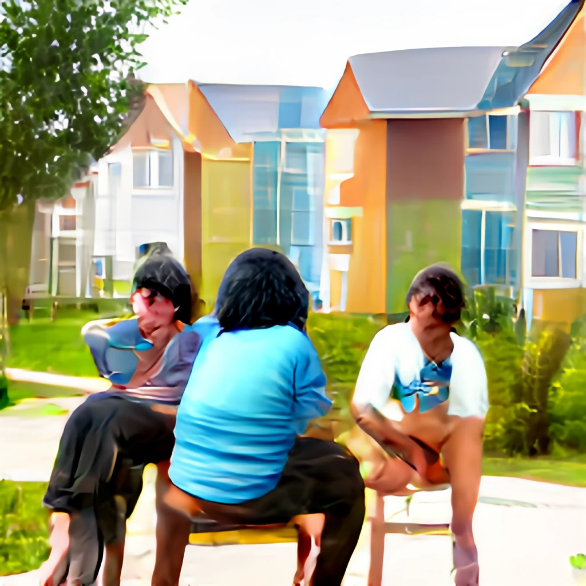
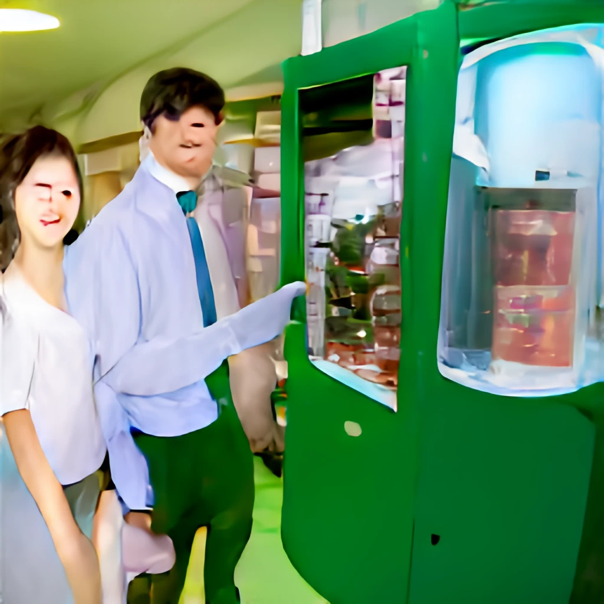

Everyone used to live in a happy community.

There used to be chatters going on, and the world would be so lively.
At some point, people started to dig into their phones for short-term happiness.
As more people were stuck to their phones, more people became indifferent to each other.

One day, the happiness machine, in which you could forget everything and stay happy for
your entire life, was invented.
As a pursuit for even more happiness, people started to leave the community.
The people that left ended up moving into the happiness machines.
They would stay happy for their entire life, with the machine offering various forms of
entertainment.
However, people outside would be sad with more of their loved onces leaving.
Eventually, the community will be deserted.
In the end, there would be someone, who is lonely as no one is besides them.
They will miss their loved ones in the machines, but not the otherwise
since their loved ones wouldn't be able to remember anything about them.